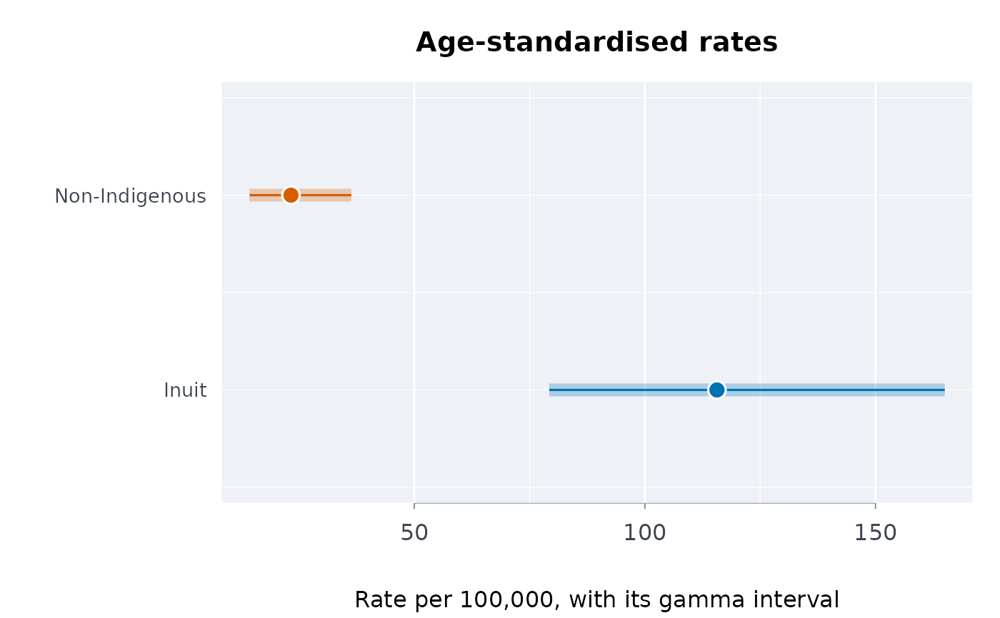

The ratio and the difference of two directly standardised rates from
agestd, with confidence intervals: log-normal for the ratio
(variance \(v_1/y_1^2 + v_2/y_2^2\)) and normal for the difference, the two rates
independent. Both measures are reported, as the relative gap alone hides how large the
absolute one is (Anderson et al. 2016).
Arguments
- x
Output of
agestd(two or more groups).- grp, ref
The labels of the group and of the reference group.
Value
A one-row data frame: group, reference, ratio with
ratiolo/ratioup, and difference (per per people)
with diflo/difup.
References
Anderson I, Robson B, Connolly M, et al. (2016). Indigenous and tribal peoples' health (The Lancet-Lowitja Institute Global Collaboration): a population study. The Lancet 388(10040):131-157. doi:10.1016/S0140-6736(16)00345-7
Examples
# made-up counts, to show the computation
std <- c(30000, 25000, 20000, 15000, 10000)
r <- agestd(events = c(4, 9, 11, 6, 3, 2, 4, 6, 5, 4),
pop = c(9000, 8000, 6000, 4000, 2000,
20000, 19000, 18000, 15000, 12000),
std = std, grp = rep(c("Inuit", "Non-Indigenous"),
each = 5))
plot(r)

rategap(r, "Inuit", "Non-Indigenous")
#> group reference ratio ratiolo ratioup difference diflo difup
#> 1 Inuit Non-Indigenous 4.970305 2.853819 8.656449 92.36184 51.22394 133.4997